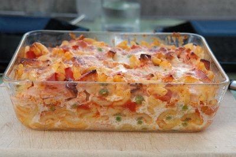

| Zutaten für 4-6 Personen: | |
| 350g | Hörnli |
| 1 El | Salz |
| 1 Tl | Butter |
| 1 kleine Dose | Erbsen |
| 1 kleine Dose | geschälte Tomaten |
| 150g | Fleischkäse (1 dicke Scheibe) |
| 2 | Eier |
| 1dl | Rahm |
| 2 dl | Milch |
| 150g | Greyerzer, gerieben |
| 1 Prise | Salz |
| 1 Prise | Muskatnuss |
Nimm eine grosse Pfanne und giesse etwa 4 Liter Wasser hinein. Nun stellst Du die Herdplatte auf grosse Hitze und gibst das Salz ins Wasser. Beides zusammen lässt Du aufkochen.
Auch der Backofen wird jetzt vorgeheizt auf 220°C.
Wenn das Wasser sprudelt, gibst Du die Hörnli hinein. Aber ganz sorgfältig: es darf nicht spritzen. Dann rührst Du sie kurz um, damit sie nicht zusammenkleben. Die Kochzeit für die Hörnli ist immer auf der Packung angegeben.
Am besten ist es aber, wenn Du nach etwa 8 Minuten 2-3 Hörnli mit einem Löffel herausfischst und sie probierst. Sie sind gut, wenn Du sie noch ein bisschen beissen musst. Das heisst in der Fachsprache "al dente".
Wenn die Hörnli weich genug sind, schaltest Du die Herdplatte aus und stellst ein grosses Sieb in den Spültrog. Nun schüttest Du das heisse Wasser mit den Hörnli ins Sieb und lässt sie abtropfen.
Jetzt holst Du eine feuerfest Form und butterst sie aus. Vergiss den Rand nicht!
Öffne die Erbsli- und Tomatendose, giesse den Inhalt in ein Sieb und lass Erbsli und Tomaten gut abtropfen.
Auf einem Holzbrett schneidest Du den Bauernfleischkäse in feine Stäbchen.
Nun gibst Du nacheinander die Hörnli, die Tomaten, die Erbsli und den Fleischkäse in die Auflaufform und mischst alles schön sorgfältig untereinander.
Für den Guss schlägst Du die Eier auf. Am besten in einem Milchkrug.
Dann giesst Du den Rahm und die Milch hinein.
Nun kommen der geriebene Greyerzer und die Gewürze dazu.
Verrühre alles gut und verteile den Guss gleichmässig über die Hörnlimischung.
Dann schiebst Du das Gitter in die Mitte des Backofens und stellst die Form darauf. Der Hörnli-Auflauf braucht etwa eine halbe Stunde Backzeit.
Unterdessen hast Du genügend Zeit, den Tisch zu decken und die Küche aufzuräumen. Achtung beim Herausnehmen: Topflappen benutzen!
"Hüt choch ich", Rezeptbuch für Kinder, Schweizerische Käseunion AG, Bern, Erstauflage 1981
Gelang im Juli 2012 ganz toll. Wir nahmen nur 250g Hörnli und es reichte locker für 2 (kleinere) Gratinschalen. Ist auch aufgewärmt sehr schmackhaft. RE